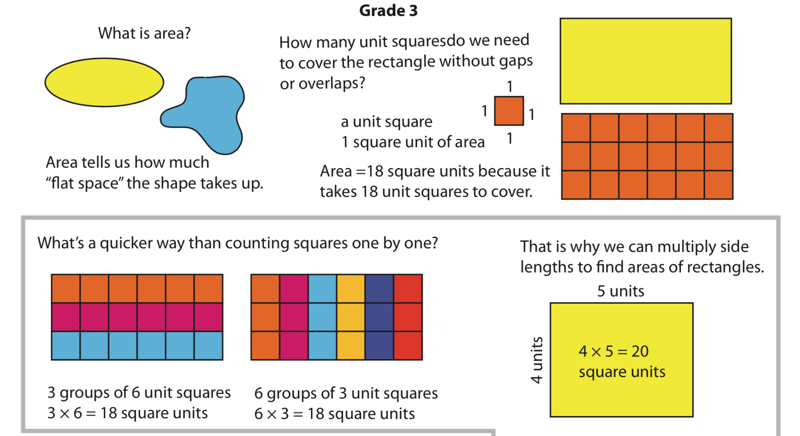

Further Mathematics Education Resources
Research
See recent journal articles and presentations at the Teachers' Multiplicative Reasoning Research Group website.
Other writing
Find other writing, presentations, and links at the previous website.
Blog / mathematics education resources
A progression on area, grades 3–8

This graphic is included from the original site materials.